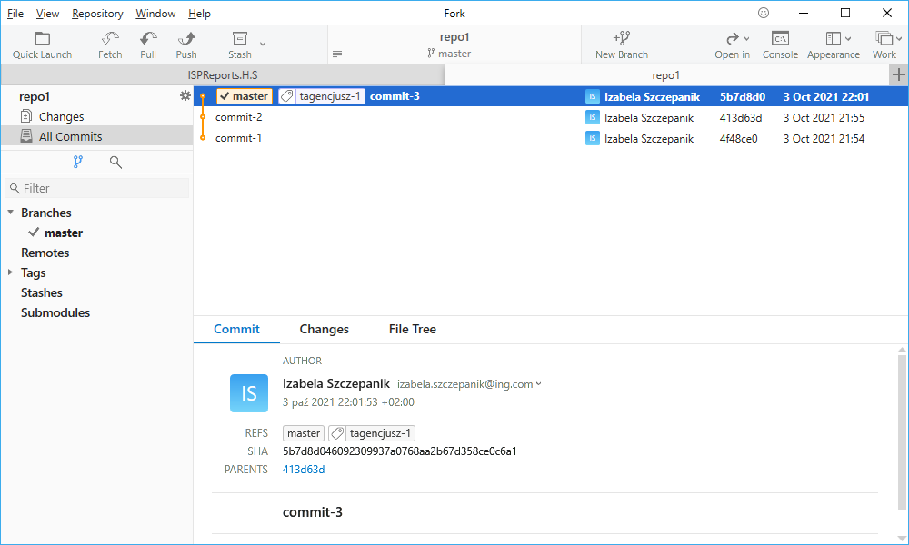

Oznacz ostatni commit stosownym tagiem.
Uzyj repozytorium z poprzedniego cwiczenia.
$ git tag tagencjusz-1
Nadaj taga do ostatniego commita.
$ git log --graph --oneline
Sprawdź log. Podejrzyj jak tagi wyglądają w GUI
